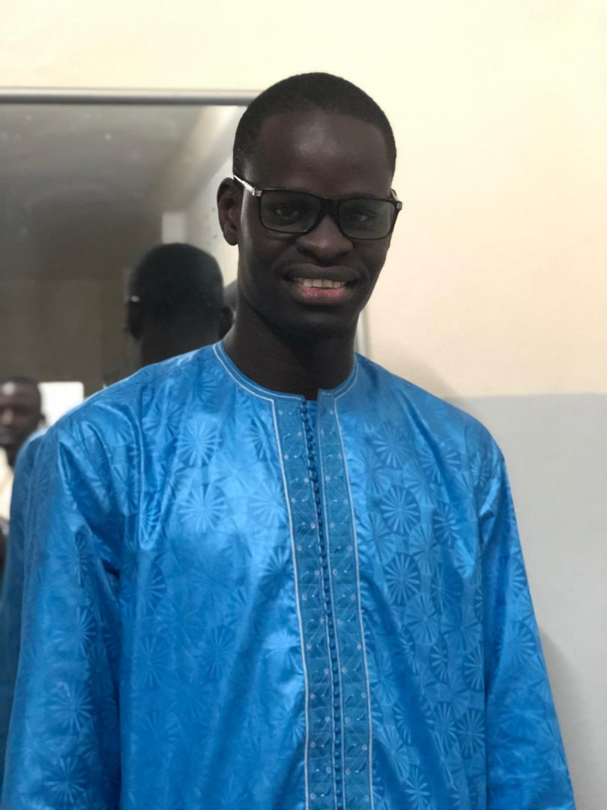

Etat Civil |
|
|---|---|
|  | |
| N° de la Carte d'identité Nationale | 1234 5678 06345 |
| Nom | FALL |
| Prénom | KHADIM |
| Date de Naissance | 28/03/1997 |
| Lieu De Naissance | Dakar |
| Sexe | Masculin |
| Taille | 190 cm |
| Adresse du domicile | 29 Notaire Ouest Guédiawaye |
Je m'appelle Khadim Fall. Je suis sénégalais .J'ai 22 ans, je suis étudiant à l'Ecole Supérieur Polytechnique de Dakar(UCAD/ESP) au Département Génie Informatique à la classe DSTI1C. Je parle 3 langues: Français,Wolof et un peu Anglais. J'apprends Informatique parceque je veux devenir programmeur. Je suis un fan de Ablaye Diop qui est un des meilleurs récitant de Xassides KHADIMOU RASSOUL comme beaucoup de Mourides.